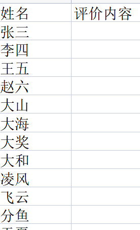
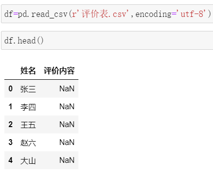
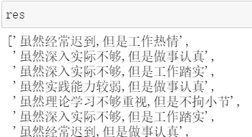

批量生成评语
这一天，你收到了一封来自远方的邮件，邮件内容如下：
嗨，最近忙吗？我的领导想让我帮他写一份员工评价表，针对全体员工及进行评价，不限字数。给的表格文件(.csv)大概是这样的：

但是，总共有一万名员工，每个员工写一句的话，需要写一万句！这太枯燥了，所以想问问你能不能用Python来解决呢？
能！Python啥都能！解放双手，从使用Python做起~
既然是评价他人，无非就是总结一下优缺点嘛，那我搜集一些表达优点的句子，再搜集一些表达缺点的句子，将它们随机组合起来不就成了。就像这样：
1 | 虽然xxxxx，但是xxxxx |
说干就干，开始写代码~
先把用到的库导进来:
1 | import pandas as pd |
然后读取给的csv文件：

现在要做的就是生成评价内容。按照之前所说，需要准备两个列表，一个存储”虽然”后面的句子，另一个存储”但是”后面的句子:
1 | suiran=['创新意识不足','实践能力较弱','深入实际不够','理论学习不够重视','经常迟到','工作较慢'] |
使用numpy随机选择一句话，将其组合起来，开始批量生成评语：
1 | res=[] |
这样，res中就存储了对于每个人的评语。

将其写入csv文件即可：
1 | df['评价内容']=res |
打开看一下吧：
完工！就算再来一万条也无所畏惧，只要运行一下上述代码就可以啦！
于是，你打开邮箱，将生成结果发了过去。
对方收到了你的邮件，然后陷入了沉思。